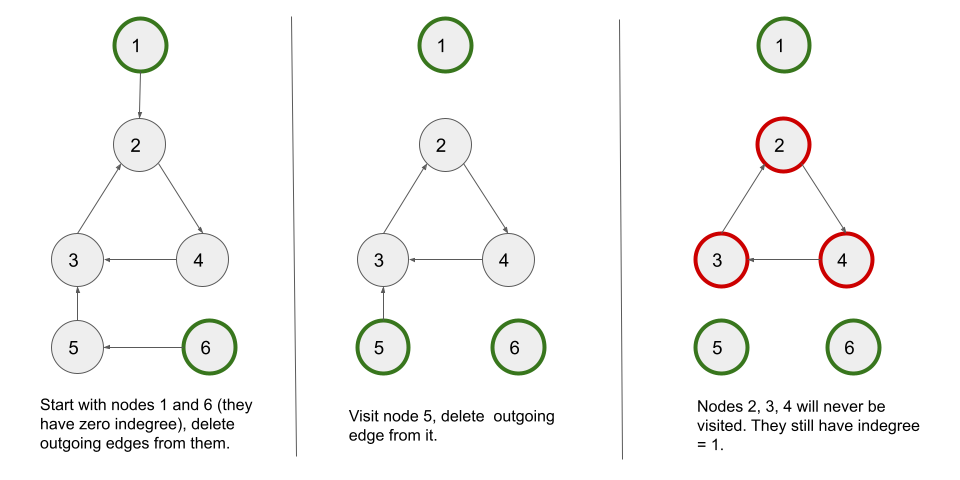

We are given a total of numCourses courses one has to take, labeled from 0 to numCourses
- 1. We are also given an array prerequisites where prerequisites[i] = [aia_i,
bib_i]
indicates that course bib_i
must be taken first if you want to take course aia_i.
Our task is to return a boolean indicating whether it is possible to complete all the courses or not.
We can see that we have been given certain courses with some dependencies between them. The dependencies are expressed as pairs, which provides some hints for framing the problem in terms of a graph.
If we regard each course as a node and draw an edge from bib_i to aia_i for any prerequisite [aia_i, bib_i] (to indicate that course bib_i should be completed before taking course aia_i), we get a directed graph.
If there is a cycle in this directed graph, it suggests that we will not be able to finish all of the courses. Otherwise, we can perform a topological sort of the graph to determine the order in which all of the courses can be finished.
As a result, the problem is reduced to determining whether a cycle occurs in a graph. If there is a cycle, we must
return false. If not, we return true.
A topological sort or topological ordering of a directed graph is a linear ordering of its vertices such that for
every directed edge u -> v from vertex u to vertex v, u comes
before v in the ordering.
In a directed acyclic graph, we can use Kahn's algorithm to get the topological ordering. Kahn’s algorithm works by keeping track of the number of incoming edges into each node (indegree). It works by repeatedly visiting the nodes with an indegree of zero and deleting all the edges associated with it leading to a decrement of indegree for the nodes whose incoming edges are deleted. This process continues until no elements with zero indegree can be found.
If you are not familiar with Kahn's algorithm, we suggest you read our LeetCode Explore Card.
The advantage of using Kahn's algorithm is that it also aids in the detection of graph cycles.
Let's perform Kahn's algorithm on a directed graph having a cycle. Here's a visual step-by-step represenntation of how it would work:

We can see that if there is a cycle, the indegree of nodes in the cycle cannot be set to 0 due to cyclic
dependency. We are unable to visit the cycle's nodes. So, if the number of visited nodes is less than the total
number of nodes in the graph, we have a cycle.
indegree of length n where indegree[x] stores the number
of edges entering node x.
adj in which adj[x] contains all the nodes with an
incoming edge from node x, i.e., neighbors of node x. We create this adjacency list by
iterating over prerequisites. For every prerequisite in prerequisites, we
add an edge from prerequisite[1] to prerequisite[0] and increment the indegree of
prerequisite[0] by 1.
q and start a BFS algorithm moving from the leaf nodes to the parent
nodes.
indegree equal to 0) in the
queue.
nodesVisited = 0 to count the number of visited nodes.node from the queue.nodesVisited by 1.neighbor (nodes that have an incoming edge from node) of
node, we decrement indegree[neighbor]by 1 to delete the node
-> neighbor edge.
indegree[neighbor] == 0, it means that neighbor behaves as a leaf node, so
we push neighbor in the queue.
nodesVisited < n we
return false as there must be a cycle. Otherwise, if nodesVisited == numCourses, we
return true. We can shorten it to just return nodesVisited == numCourses.
Java
class Solution {
public boolean canFinish(int numCourses, int[][] prerequisites) {
int[] indegree = new int[numCourses];
List> adj = new ArrayList<>(numCourses);
for (int i = 0; i < numCourses; i++) {
adj.add(new ArrayList<>());
}
for (int[] prerequisite : prerequisites) {
adj.get(prerequisite[1]).add(prerequisite[0]);
indegree[prerequisite[0]]++;
}
Queue queue = new LinkedList<>();
// Push all the nodes with indegree zero in the queue.
for (int i = 0; i < numCourses; i++) {
if (indegree[i] == 0) {
queue.offer(i);
}
}
int nodesVisited = 0;
while (!queue.isEmpty()) {
int node = queue.poll();
nodesVisited++;
for (int neighbor : adj.get(node)) {
// Delete the edge "node -> neighbor".
indegree[neighbor]--;
if (indegree[neighbor] == 0) {
queue.offer(neighbor);
}
}
}
return nodesVisited == numCourses;
}
}
C++
class Solution {
public:
bool canFinish(int numCourses, vector>& prerequisites) {
vector indegree(numCourses);
vector> adj(numCourses);
for (auto prerequisite : prerequisites) {
adj[prerequisite[1]].push_back(prerequisite[0]);
indegree[prerequisite[0]]++;
}
queue q;
// Push all the nodes with indegree zero in the queue.
for (int i = 0; i < numCourses; i++) {
if (indegree[i] == 0) {
q.push(i);
}
}
int nodesVisited = 0;
while (!q.empty()) {
int node = q.front();
q.pop();
nodesVisited++;
for (auto& neighbor : adj[node]) {
// Delete the edge "node -> neighbor".
indegree[neighbor]--;
if (indegree[neighbor] == 0) {
q.push(neighbor);
}
}
}
return nodesVisited == numCourses;
}
};
Python3
class Solution:
def canFinish(self, numCourses, prerequisites):
indegree = [0] * numCourses
adj = [[] for _ in range(numCourses)]
for prerequisite in prerequisites:
adj[prerequisite[1]].append(prerequisite[0])
indegree[prerequisite[0]] += 1
queue = deque()
for i in range(numCourses):
if indegree[i] == 0:
queue.append(i)
nodesVisited = 0
while queue:
node = queue.popleft()
nodesVisited += 1
for neighbor in adj[node]:
indegree[neighbor] -= 1
if indegree[neighbor] == 0:
queue.append(neighbor)
return nodesVisited == numCourses
Here, nn
be the number of courses and mm be the size of prerequisites.
Time complexity: O(m+n)O(m + n)
adj list takes O(m)O(m) time as we
go through all the edges. The indegree array take O(n)O(n)
time.
m edges, it would take O(m)O(m)
time to iterate over the edges.
Space complexity: O(m+n)O(m + n)
adj arrays takes O(m)O(m) space. The
indegree array takes O(n)O(n)
space.
We can also use a depth-first search (DFS) traversal to detect a cycle in a directed graph.
In DFS, we use a recursive function to explore nodes as far as possible along each branch. Upon reaching the end of a branch, we backtrack to the previous node and continue exploring the next branches.
Once we encounter an unvisited node, we will take one of its neighbor nodes (if exists) as the next node on this branch. Recursively call the function to take the next node as the 'starting node' and solve the subproblem.
A node remains in the DFS recursion stack until all of its branches (all nodes in its subtree) have not been explored. When we have examined all of a node's branches, i.e. visited all of the nodes in its subtree, the node is removed from the DFS recursive stack.
If you are new to Depth First Search, please see our Leetcode Explore Card for more information on it!
If the graph has a cycle, we must have a back edge connecting a node to one of its ancestors while traversing nodes in the DFS manner.
Let's think how we can establish whether or not a node's neighbor is an ancestor when navigating from one node to another.
If the neighboring node has not yet been visited, it cannot be an ancestor (it is a child node).
Otherwise, if a neighboring node is visited, it may or may not be an ancestor. If the neighboring node is an ancestor, i.e. there is a back edge, it means that we visited this ancestor node first in the DFS traversal, then visited and explored some other nodes, and eventually visited a node that connects back to the ancestor node. As we are still exploring the ancestor node's subtree while iterating over this path, hence this node must be in the current DFS recursive stack.
However, if a neighboring node is visited but not in the recursion stack, it signifies we have previously explored that node in a different branch, and it does not form a cycle in the current branch.
As a result, to detect the cycle we must keep track of the visited nodes (like in a normal DFS) and also the nodes in
the function's recursion call stack for DFS traversal. The nodes in the stack store the current path that we are on.
There is a cycle in the graph if a node is reached that is already in the recursion stack. We use a boolean array of
length n to track which nodes are in the call stack so we can check if a node exists in O(1)O(1).
adj in which adj[x] contains all the nodes with an
incoming edge from node x, i.e., neighbors of node x. We create this adjacency list by
iterating over prerequisites. For every prerequisite in prerequisites, we
add an edge from prerequisite[1] to prerequisite[0].
visit and inStack, each of size n. The visit
array keeps track of visited nodes and inStack keeps track of nodes that are currently in the
ongoing DFS stack. It will help us to detect a cycle in the graph.
dfs method which takes four parameters: an
integer node from which the current traversal begins, adj, visit, and
inStack. It returns a boolean indicating whether there is a cycle in the graph. If any
dfs call returns true, we have a cycle. In such a case, we return false
immediately as our answer to the problem. Otherwise, if no dfs call from all the nodes result in a
cycle, we return true. We perform the following in this method:
node is already present in inStack, we have a cycle. We return
true.
node is already visited, we return false because we already visited this
node and didn't find a cycle earlier.
node as visited and also set inStack[node] = true.node and for each neighbor, we
recursively call dfs(neighbor, adj, visit, inStack). If we get a cycle from
neighbor, we return true.
node, we mark inStack[node] =
false to mark node as out of stack. We also return false as we didn't
find any cycle.
Java
class Solution {
public boolean dfs(int node, List> adj, boolean[] visit, boolean[] inStack) {
// If the node is already in the stack, we have a cycle.
if (inStack[node]) {
return true;
}
if (visit[node]) {
return false;
}
// Mark the current node as visited and part of current recursion stack.
visit[node] = true;
inStack[node] = true;
for (int neighbor : adj.get(node)) {
if (dfs(neighbor, adj, visit, inStack)) {
return true;
}
}
// Remove the node from the stack.
inStack[node] = false;
return false;
}
public boolean canFinish(int numCourses, int[][] prerequisites) {
List> adj = new ArrayList<>(numCourses);
for (int i = 0; i < numCourses; i++) {
adj.add(new ArrayList<>());
}
for (int[] prerequisite : prerequisites) {
adj.get(prerequisite[1]).add(prerequisite[0]);
}
boolean[] visit = new boolean[numCourses];
boolean[] inStack = new boolean[numCourses];
for (int i = 0; i < numCourses; i++) {
if (dfs(i, adj, visit, inStack)) {
return false;
}
}
return true;
}
}
C++
class Solution {
public:
bool dfs(int node, vector>& adj, vector& visit, vector& inStack) {
// If the node is already in the stack, we have a cycle.
if (inStack[node]) {
return true;
}
if (visit[node]) {
return false;
}
// Mark the current node as visited and part of current recursion stack.
visit[node] = true;
inStack[node] = true;
for (auto neighbor : adj[node]) {
if (dfs(neighbor, adj, visit, inStack)) {
return true;
}
}
// Remove the node from the stack.
inStack[node] = false;
return false;
}
bool canFinish(int numCourses, vector>& prerequisites) {
vector> adj(numCourses);
for (auto prerequisite : prerequisites) {
adj[prerequisite[1]].push_back(prerequisite[0]);
}
vector visit(numCourses);
vector inStack(numCourses);
for (int i = 0; i < numCourses; i++) {
if (dfs(i, adj, visit, inStack)) {
return false;
}
}
return true;
}
};
Python3
class Solution:
def dfs(self, node, adj, visit, inStack):
# If the node is already in the stack, we have a cycle.
if inStack[node]:
return True
if visit[node]:
return False
# Mark the current node as visited and part of current recursion stack.
visit[node] = True
inStack[node] = True
for neighbor in adj[node]:
if self.dfs(neighbor, adj, visit, inStack):
return True
# Remove the node from the stack.
inStack[node] = False
return False
def canFinish(self, numCourses: int, prerequisites: List[List[int]]) -> bool:
adj = [[] for _ in range(numCourses)]
for prerequisite in prerequisites:
adj[prerequisite[1]].append(prerequisite[0])
visit = [False] * numCourses
inStack = [False] * numCourses
for i in range(numCourses):
if self.dfs(i, adj, visit, inStack):
return False
return True
Here, nn
be the number of courses and mm be the size of prerequisites.
Time complexity: O(m+n)O(m + n)
adj takes O(m)O(m) time as we
go through all the edges.
visit and inStack arrays take O(n)O(n) time each.
dfs function handles each node once, which takes O(n)O(n) time in
total. From each node, we iterate over all the outgoing edges, which further takes O(m)O(m)
time to iterate over all the edges as there are a total of m edges.
Space complexity: O(m+n)O(m + n)
adj arrays takes O(m)O(m) space.
visit and inStack arrays take O(n)O(n) space
each.
dfs can have no more than nn elements in the worst-case scenario. It
would take up O(n)O(n)
space in that case.